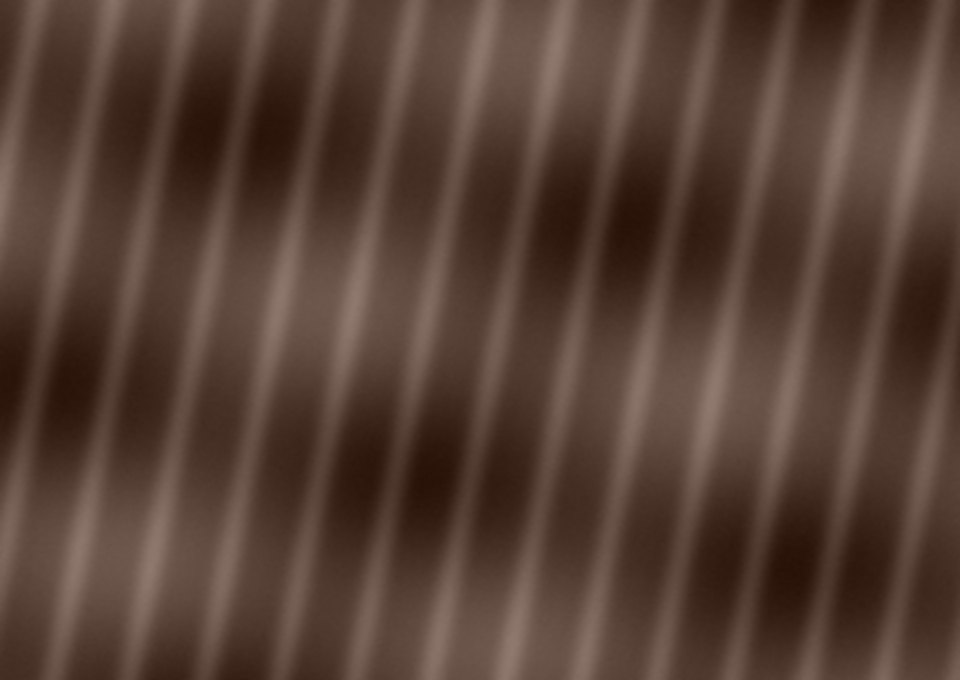

My daily edit
Мои средства и процедуры
Добавляй любые шаги ухода и выбирай, когда они появляются в календаре. Новые средства не назначаются автоматически.
Добавить шаг ухода
Можно менять отдельный день, не меняя расписание остальных дней.
Дополнительный уход на выбранную дату
Настроить этот день
Измени активы только для выбранной даты. Это не медицинское назначение.
Как чувствует себя кожа?
Фото прогресса
Фотографии сохраняются в IndexedDB только на этом устройстве. Не загружаются на GitHub. Лучше делать снимки при одинаковом освещении.
Твой прогресс
Статистика показывает регулярность ухода, а не медицинскую эффективность лечения.
Твоя схема
Адапален и азелаиновая в примерной схеме разведены по разным вечерам. Частоту увеличивай только при хорошей переносимости и с учётом назначения дерматолога. При беременности или планировании адапален противопоказан.
Резервная копия
Данные и фото хранятся локально. Экспортируй резервную копию до обновления приложения и периодически сохраняй её в «Файлы».
Для установки: Safari → Поделиться → На экран Домой. Не удаляй данные Safari без резервной копии.

Good hair,
good rituals.
Отдельный календарь для волос. Все записи хранятся только на этом устройстве.
Выбранный день
Добавить средство или процедуру
Stillness is
a luxury.
A PRIVATE COLLECTION OF THOUGHTS
Something to
think about.
У тебя есть право на собственный ритм.
1000 оригинальных коротких размышлений о спокойствии, границах, внимании к себе и внутренней опоре. Без интернета.
Ingredient Check.
Understand your formula, not just a rating.
Your list stays on this device. No formula is sent to a server.
Formulas are more than ingredients.
No INCI-only checker can reliably predict whether a finished product will clog your pores. Concentration, formulation, skin type and individual reactions matter. We flag ingredients worth investigating, not diagnose acne or assign a definitive comedogenic score.
External sites are optional references. This offline reference is a curated, limited guide, not a live integration or official database.